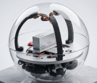

球体が自由に動く仕組み
透明なアクリル球の内側に3つのオムニホイールを配置。球体そのものをさまざまな方向へ転がします。

3つのホイールで球体を転がす
普通の車は車輪を回して前後に進み、横へ移動するときは車体の向きを変えます。球体ロボットは、透明なアクリル球の内側にある3つのオムニホイールを回し、球体の内側から力を加えて移動します。
それぞれのホイールの回転方向や速度を調整すると、球体に加わる力の向きを変えられます。前後・左右・斜めなど、行きたい方向へ球体を転がします。
横方向にも動けるオムニホイール
オムニホイールは、車輪の外周に小さなローラーを並べた全方向移動用の車輪です。
小さなローラーが横滑りを助ける
車輪本体の回転方向に対して垂直な向きにも、小さなローラーが回転します。この構造によって、通常の車輪では苦手な横方向の動きを取り入れられます。
3つの回転を組み合わせる
3つのオムニホイールの回転を組み合わせることで、球体を押す力の向きが変化します。車体の向きを変えるための旋回をせずに、好きな方向へ動けるのが特徴です。